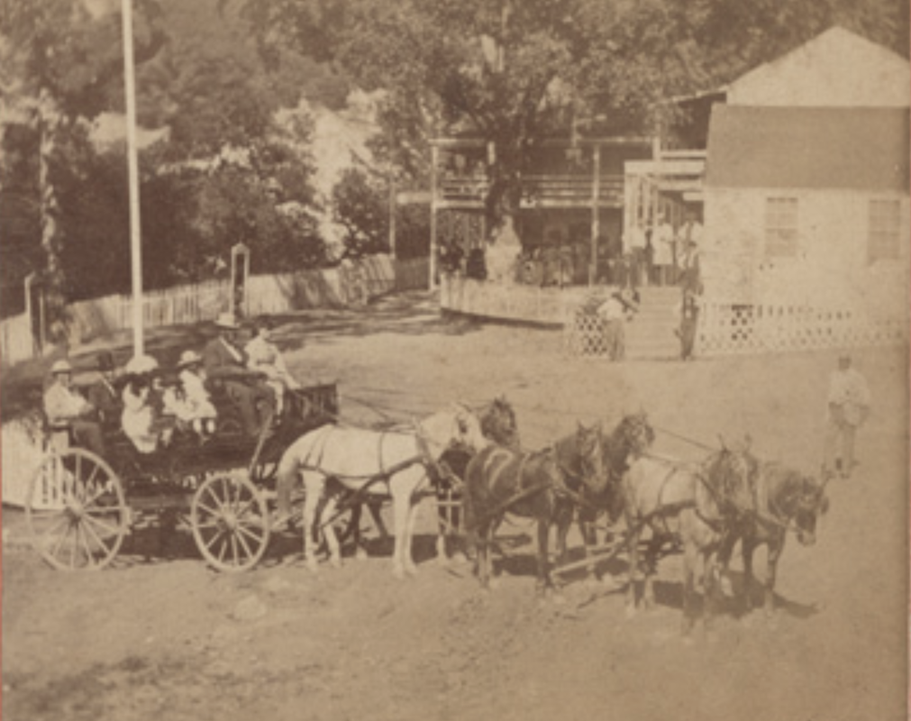
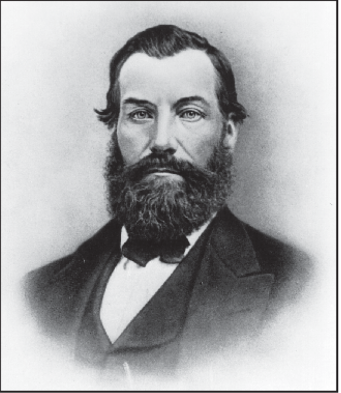
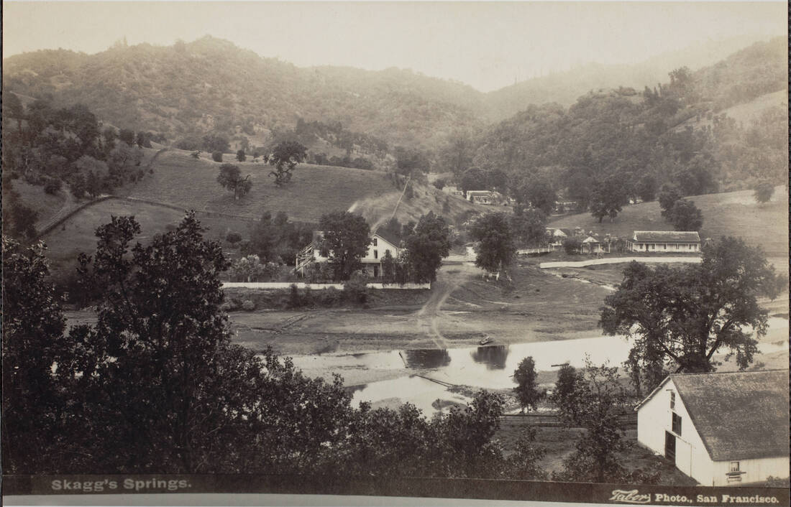
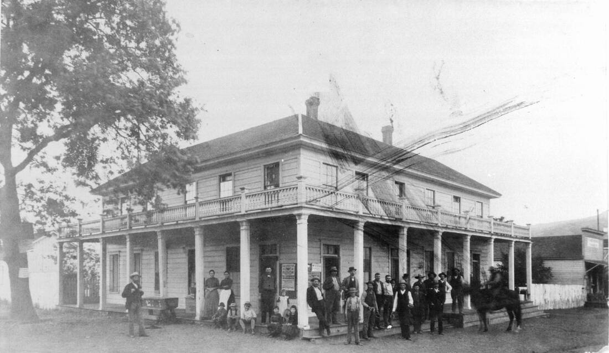
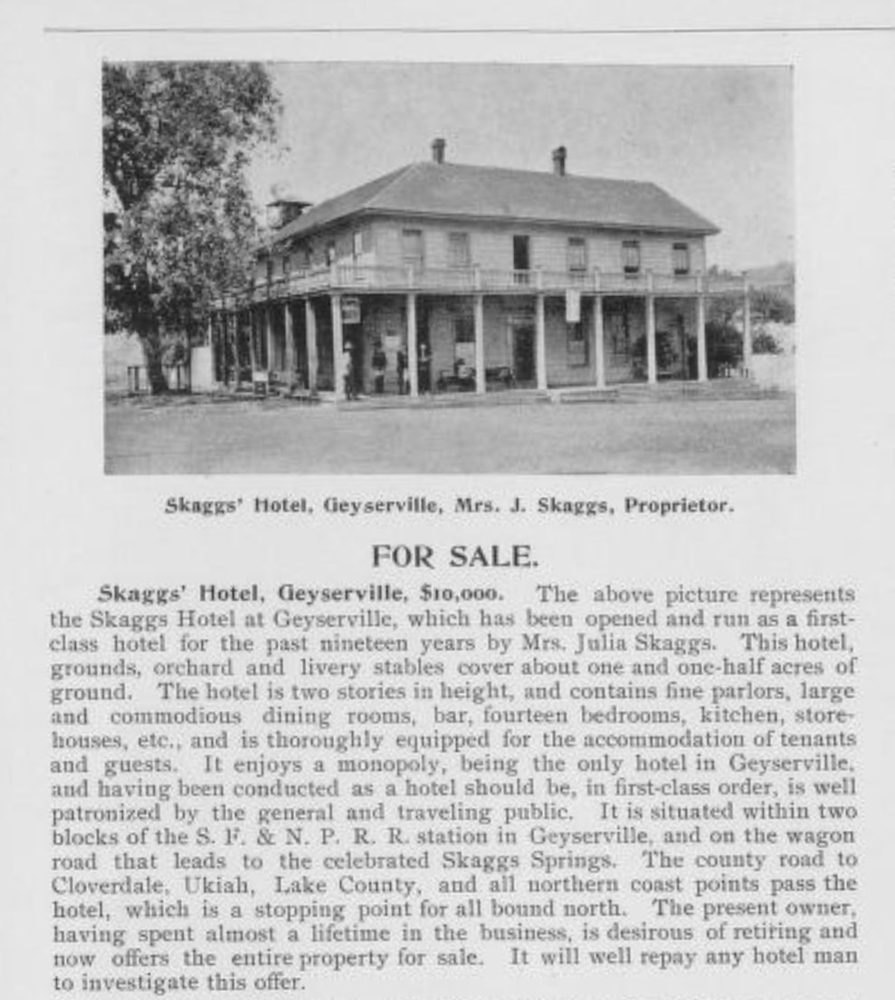

Squatter Captain Alexander Skaggs
and his Hot Springs Resort
© 2020 Hannah Clayborn All Rights Reserved
|
By virtue of a fortunate geologic quirk, some parts of Sonoma County are punctured by bubbling hot mineral springs. They were used and shared by Native Americans for thousands of years. Not long after the first American settlers arrived, those springs spawned a profitable health-resort industry that drew tourists and invalids from all over the state.
One of the earliest, largest, and most famous of the suphur-infused hot springs resorts in Northern California was Skaggs Springs, a small level valley tucked into a vertiginous region about nine miles west of Geyserville. Located along what used to be Warm Springs Creek, Skaggs Springs now lies beneath Lake Sonoma, created by the Warm Springs Dam as it filled in the late 1980s. The Skaggs family pre-empted the springs and surrounding hill country almost as soon as they arrived in the fall of 1856, after four years raising stock in hilly terrain in Nevada County. By 1858 they had built enough to hold their first Fourth of July "Hop," an event that included the irresistible triplets, drinking, dining, and dancing, that would be repeated as a tradition every year. Elizabeth Pohley remembered the old resort. As a child Elizabeth lived with her "Aunt Missouri" (Mrs. Elijah Skaggs #2). She remembered the excitement when she was lifted aboard the front seat of the "auto stage," as early busses were called, bound for the Springs. Masterfully guiding that particular stage was one of the Lampson brothers out of Geyserville.(1) The Pohleys and many Bay Area families recuperated, or spent happy vacations at Skaggs Springs from the early 1860s clear through the 1920’s, traveling first by stage, then by railroad and stage, then by autobus, and finally adventurous "autoists." The Wall Street crash of 1929 wiped out disposable income for many, which decimated tourism. The Great Depression had not fully lifted when the Second World War and gas rationing delivered the knockout blow, and the hotel, which had survived fires and land-claim jumpers, finally closed its doors at the end of 1942 season.(2) Now the old resort site, along with its relics, are submerged. Although some like Mrs. Pohley, remember the resort, no one living can recall its long reign as the Bay Area’s favorite get-away, when it often drew as many as 300 people a day. 
Lake Sonoma beginning to form behind Warm Springs Dam, from Before Warm Springs Dam, 1985, Praetzellis, Stewart
|
 The Healdsburg Squatters' paramilitary imitated the Union troops gathering at the same time throughout California. Above, troops gather at Washington Square in, San Francisco, July 4, 1862. (California Historical Society) The Healdsburg Squatters' paramilitary imitated the Union troops gathering at the same time throughout California. Above, troops gather at Washington Square in, San Francisco, July 4, 1862. (California Historical Society)
Captain of the Squatters
The enterprise started with a rather fascinating fellow, Alexander Skaggs, and his father William, and brothers Elijah and Ebenezer. Although many sources state that they arrived in 1857, the year Harmon Heald laid out Healdsburg and christened it, some members of the family arrived the previous fall. As with so many others emigrants, California was not their first stop. In 1839 William (1803–1890), a preacher later addressed as Reverend or Elder Skaggs, and his wife Maria Barnes (b.1803) left Green County, Kentucky with their five children to farm in Carroll, Missouri. Second son, Elijah, may have made a solo trip to California in 1850, scouting out the Sacramento area. In 1853 patriarch William, his wife, and their three sons made the overland trip, driving herds of cattle and horses before them and settling to raise stock in hilly terrain in Nevada County.(3) Alexander (1826–1897), the eldest, had married Elizabeth Thomas (1831–1920), also a native of Kentucky, in 1850 in Jefferson County, Missouri. They would eventually have five children, four of whom lived to adulthood. In 1848 second son, Elijah (1827–1861) married Sarah Thomas (c. 1829–1855), also a native of Kentucky. Sarah had two children before she died in 1855 in Nevada County, California. Once widower Elijah got to Sonoma County, he wasted no time finding a new wife, 15 year-old Missouri Frances "Fannie" Thomas (1843–1918) in 1858. Missouri, of course, was born in that state. The relationship of these three Thomas wives is unclear, but they are probably sisters.(4) It is difficult to pinpoint the location of all Skaggs family members in this early era. Elijah, Alexander, and father William occupied the Skaggs Springs ranch, but were also squatting on parts of the Sotoyome Rancho, at that time owned by Josephine Fitch Bailhache, Henry Delano Fitch’s daughter. One source claims that the Skaggs family originally started the Skaggs Springs ranch with William and John Knight, but bought them out in the spring of 1857. In 1860 patriarch William Skaggs is living alone, farming on land he owns, while Alexander, Elijah, and Ebenezer are elsewhere in the township. Elijah is a farmer with twice as much land as his father (probably the Skaggs Springs ranch) and considerable taxable personal property. Older brother Alexander, living nearby, owns no land or possessions, and lists no occupation.(5) Elijah Skaggs, who appears to be original owner and pre-emptor of the Skaggs Hot Springs ranch, died March 6, 1861, leaving Alexander as his executor. Elijah’s widow Missouri, still a teenager at 18, had a daughter with Elijah, Elizabeth Ann, who had died three months before her father. Three weeks after Elijah’s death, Missouri gave birth to their second daughter, Emma Leonora. In January 1862, Missouri remarried, to Matthew Wilson, and lived the rest of her long life near Windsor.(6) From this point on, Alexander Skaggs takes the lead in all family enterprises. I first "met" Alexander while doing research on those feisty squatter families and the ensuing battles with authorities that became the longest-running squatter uprising in California. Skaggs and company were in the thick of those battles, and "Captain Alexander Skaggs", was head of the paramilitary squatter rebels. He acted as the spokesman for about 40 armed squatters at a standoff with the County Sheriff and his posse of 230 prominent Sonoma County citizens just northwest of Healdsburg on July 15, 1862. The Sheriff and posse were given the task of ejecting the squatters from the cabins and barns they had built illegally on Josephine Fitch Bailhache’s Sotoyome Rancho. When everyone had calmed down and violence was averted, Skaggs ascended a gatepost and invited all the friends of the settlers within earshot to attend a barbeque at the Skaggs ranch. The squatters and about 100 of the posse made the thirty minute walk north to attend. The Skaggs family would later lose that ranch, but Captain Alexander Skaggs would never lose his Southern charm and hospitality.(8) By 1863, patriarch William was taxed for an 8th class hotel in Mendocino Township (probably near the present town of Geyserville), while the same year Alexander was also taxed for an 8th class hotel at Hot Sulphur Springs. In this era that meant each hotel had income of less than $100 in that year.(7) That indicates that they were running two hotels, as well as squatting on other land on the Sotoyome Rancho!(9) Even amidst the battles with enforcement officials, Alexander and his father were developing Hot Sulphur Springs, later Skaggs Springs, where three different hot springs bubbled from crevices in the rock formations, and other soda springs were available for drinking. The Skaggs family added considerably to their first patent of 130 acres, forming a cattle-grazing operation on just over 1300 acres.(10) By 1860 the Skaggs family had established a resort that may have seen as many as 20 guests a day, who probably slept in tent-like accommodations. With visitors on the increase they built a redwood hotel in 1864, and an addition the next year. In 1870, Alexander, 43, is driving the daily stage from Healdsburg to the Springs during the resort’s season, which typically opened in May. The increase in visitors is shown a year later when a second daily stage run from Healdsburg was opened by Emerson, Bostwick, and Co. Both stages charged $1 per passenger.(11) 
Skaggs Spring as depicted in Thompson's 1877 Sonoma County Atlas, p. 30 (detail). The resort lay along Warm Springs Creek, outside of any rancho boundaries in Mendocino Township. At this time Skaggs owned more land than depicted here, just over 1,300 acres.
|
|
 There are no photos of the stage driven by Alexander Skaggs during the 1860s. It would have resembled the stage driven by Clark Foss, seen here c. 1870. The first Skaggs Springs Hotel might also have resembled the first Geysers Hotel, seen in the background here, with large two-story verandahs surrounding the structure, known as the Monterey style. Photo by Brayton of the Towne party. (California State Library)
Fist Fights and Land Rights
Although Skaggs Springs Resort was consistently called one of the most popular seasonal hot springs resorts in the state, Alexander Skaggs continued stock raising on his 1300-acre ranch, and personally managed the resort until about 1865. Thereafter he tried renting the resort to a series of managers that included G.A. Runk, B.F. Tucker (for whom Tucker Street in Healdsburg is named), John Leonard, and beginning in April 1872, a man named Perry Emerson, one of the partners in the stage line mentioned above. Trouble followed soon after. Emerson’s entrance as hotelkeeper was heralded in the press: The public will be pleased to learn that Perry N. Emerson, the well-known and popular hotelkeeper has leased this favorite watering-place for a term of years. Whoever knows Mr. Emerson will be satisfied that nothing will be wrong that an experienced, assiduous host can do to make guests enjoy their visit to Skaggs’ Springs. Mr. Emerson has kept hotel in Healdsburg, Santa Rosa, Cloverdale and Petaluma. In the last-named place he conducted the popular American Hotel for nearly six years, and as a landlord he has always been voted a success. It is safe to say he will make his new establishment a pleasant home for all visitors, and a source of profit to himself.(12) The trouble started in February the next year, with reports of claim jumping at the Springs. Now the tables had turned and squatter Captain Alexander Skaggs was the landlord protecting his rights. The newspaper editor explained: In early days land jumping was quite a common pastime in this section of country, but of late there has been no excuse for it. During the past few days it has been rumored that a township of land is soon to be surveyed just west of the Skaggs Springs property and squatters have gone thither to Secure desirable pieces of real estate. The most important of these is an attempt to secure possession of the celebrated Springs. On the 3d instant Sam Englehart and Harvey Truitt went upon the land heretofore and still claimed by Alex. Skaggs, built a shanty near the springs, and commenced housekeeping in a rude manner. They claim that the line of the township will run between the Springs and the house occupied by Mr. Skaggs; that Mr. Skaggs can hold the house and land on his side of the township line, but that they will hold the Springs and the land adjoining. Should this be the case it is quite likely that legal technicalities may arise that the Courts alone can decide. The public were somewhat surprised at this movement, as was doubtless Mr. Skaggs, as he has been in peaceable possession of the property for some twelve or fifteen years, and valued the same at from $20,000 to $30,000. There are also others [L. Caldwell, W.H. Litton] who have laid claims to lands in the vicinity of Skaggs Springs.(13) Reporting weekly the newspaper added: ...Mr. Skaggs informs us that he has been in possession of the land for sixteen years, has the same enclosed by a substantial fence, and has erected thereon a hotel and a number of cottages for the accommodation of visitors to the Springs. That on last week he discovered that the defendants had squatted on a portion of the land, and that in attempting to remove them he was resisted with such violence that he was compelled to desist and resort to the law for redress…We learned yesterday that Mr. Skaggs has resided lately in a house nearly half a mile from the hotel, but that since the present difficulty commenced he has moved to one of the cottages near the hotel, and Rev. Mr. Skaggs, his father, now occupies the house formerly occupied by his son and claims the quarter section on which it stands. It is said that a surveyor with his tools, is now stopping at the Springs Hotel and that a survey will soon be commenced.(14) Although Perry Emerson, the new hotelkeeper, is not mentioned in these articles, he seems to have a connection to the claim jumpers. According to court records, Skaggs and Emerson got into a fist fight over the resort on or about March 1, 1873, prior the start of the tourist season. Skaggs claimed that Emerson was not paying his rent or running things properly. Skaggs won his suit against claim jumpers Englehard and Truitt, but as reported on March 13, they continued to occupy the Springs, reminiscent of Skaggs’s own tactics a decade earlier squatting on the Sotoyome Rancho. The Sheriff finally ejected Englehard and Truitt in April. This time the local press took landlord Alexander’s side by declaring, Mr. Skaggs has been in possession of these Springs sixteen years; has made all the improvements spoken of above [one hotel, with 22 rooms, and 16 cottages] has the same enclosed with a substantial fence, and now has to resort to the law to protect him in the enjoyment of his possession. It is the general opinion here, that he will succeed, and put to flight the interlopers.(15) Making matters more incendiary, Alexander and family were living in a home near the springs and factions were beginning to form. A visitor’s description of her time at the Springs, published in July 1873, seems to be a plant by Emerson, praising his own work and denigrating Skaggs.(16) Alexander obtained a court order to have Emerson evicted when he failed to pay his rent. On October 28, however, just six days before Skaggs was to repossess the resort, the hotel building burned. According to the local press: …last Tues. night; 11 o’clock [a fire was] discovered near a stove pipe that went up from the parlor; burned so rapidly that those in bed upstairs barely time to escape with their clothes in their arms; impossible to save anything from second story, part save first floor; including piano and parlor furniture. Mr. Emerson had been removing his furniture from the cottages preparatory to giving possession to Mr. Skaggs on the 3rd of November. Emerson’s loss estimated at $4,000 to $4,500. Alex. Skaggs loss probably $4,000, building $3,000 [a later article amends Skaggs’s loss to $10,000]. We are informed $2,000 of his loss covered by insurance. The paper went on to report that there were no guests at the time, only the soon-to-be-former hotelkeeper, Perry Emerson, his brother (?), Samuel R. Emerson, John Nutter, Ben Poole and Harvey Truitt. You will recognize the name Harvey Truitt as one of the claim jumpers ejected by the Sheriff in April 1863.(17) Skaggs, and not a few others, formed an entirely understandable conviction that Emerson and his cohorts deliberately torched the hotel. Skaggs had the Sheriff arrest them all, charging them with arson. Although Skaggs as plaintiff won his first suit against Perry Emerson in October 1874, that ruling was overturned in the state supreme court on July 19, 1875, and the charges against the errant manager were dismissed. Meanwhile, Samuel R. Emerson countersued Alexander Skaggs for false imprisonment, malicious prosecution, and defamation of character, and he finally prevailed in state supreme court in January 1877. Alexander Skaggs had to pay Samuel Emerson $2,000 plus court costs.(18) Perry Nathaniel Emerson and Samuel R. Emerson, probably brothers, may have used their court award to buy property in Lake County. By 1880 both ended up in "Gravelly Valley," later known as Hullville, three miles east southeast of Bear Mountain. Just as Skaggs Springs now lies under Lake Sonoma, Hullville lies under Lake Pillsbury.(19) The basis of the dispute between Skaggs and Emerson and several other claim jumpers was a struggle over ownership of the Hot Springs after Donahue built the railroad to Healdsburg and points north. Judging by the number of people who coveted it, Skaggs Springs must have been making a good deal more than $100 a year in taxable income by this time. The railroad changed many things, but initially it meant an exponential increase in tourism. Just as Alexander had done a decade earlier, several parties, including Capt. William H. Litton commenced jumping in and building shanties on the resort land. Litton later built the large Litton Springs Resort (known now as Lytton) north of Healdsburg at a cost of $80,000, which although not a bathing hot springs, had a soda springs and a naturally carbonated seltzer springs.(20) Despite his setbacks, Alexander Skaggs rebuilt his hotel immediately after the October 28, 1873, fire. On December 18,1873 the newspaper stated: Alexander Skaggs informs us that the work on the new hotel at Skaggs Springs is progressing as rapidly as the present inclement weather will admit of. The building will be nearly twice the size of the old one, and of a different architectural design. It will probably be completed in the course of two months. A mortgage record indicates that there were only 17 rooms in the new building, but they were probably much larger than the ones in the original 1964 hotel. The new hotel also had a parlor (lobby), an office, and a barbershop.(21) And if, as superstition dictates, personal misfortune comes in threes, then Alexander and Elizabeth met their third trial when they lost a baby girl, never named, or named Daughter Girl, August 13, 1874. She was born in 1872, and according to the newspaper, was sick only a day with diphtheria before she slipped away.(22)  Lithograph of Alexander Skaggs, illustrating his biography in Guinn's, History of California and Biographical Record, 1904,
300 Visitors a Day
By 1877, with the help of that new railroad to Healdsburg, Skaggs Springs played host to 300 invalids, tourists, and vacationers on a good day between May and October. Most of them were from San Francisco or cities in Marin and Sonoma Counties. They christened the rooms and cottages with names like Oakland, Magnolia (also known as Murderer's Row), Knob Hill, San Rafael, San Francisco, and Santa Rosa. Giving evidence of their points of origin, these names were meant to make the guests feel at home.(23) In the Fall of 1876 , when business slowed, …Mr. Skaggs…made many and expensive improvements at the Springs, amongst which is one three-room cottage complete, a nice bridge across the creek, a wall 450 feet in length from the hotel to the cottages, making the road along the edge of Hot-spring creek, about 20 feet wider than before; the grounds have been prepared for 500 gum [eucalyptus] trees which are to be immediately put out. In March 1877 we find Alexander hard at work building… a large fence, putting up new cottages and making needed repairs in buildings, fences.etc.; grading a broad avenue and walk from the hotel to the springs; planting trees and shrubbery, and otherwise improving this popular resort…A bridge will be built across Hot Spring Creek at the Steep Ford and the road filled in where washed out; slides cleared away and all put in order by the first of April when the hotel will be opened to the public.(24) If we arrived at Skaggs Hot Springs by stage in the late 1870's we might have initially found the barroom for much needed libations after the harrowingly steep and twisting roads before inspecting one of the 17 sleeping rooms. Thus fortified, we might have cleaned up before dining in the public, or if we were wealthy, in the private dining room. Outside we might admire the east garden, or pay a visit to the barn, horse corral, and hog pen. Later we might stroll with other guests past five or six cottages set along Little Warm Springs Creek, or the employee houses and "shanties" that now populated the growing complex. If we had arrived late on a crowded evening, however, we might have had to make do with accommodations in one of the seasonal tent structures that housed the overflow or appealed to those seeking a rustic country experience. Next day we might have to choose between a descent into sulphurous baths, horseback riding, or perhaps a hunting trip to bag some venison for dinner. |

Panorama of Skaggs Hot Springs c. 1905. The hotel is seen at left, and the barn at right in foreground. At right in background are the cottages spread out along Warm Springs Creek. (Sonoma County Library)
|
130-Degree Alkaline Bath or Cold Soda and Iron Spring
Sources differ as to whether there were three or four hot springs, but they agree that spring water ran along a 900-foot pipe into the hotel kitchen. Something so comforting as a 130-degree alkaline bath was not enough. According to Thompson’s 1877 Sonoma County Atlas, the main attraction for the health conscious was, ...a cold soda and iron spring, a valuable tonic for invalids. In the spring of 1877 the Russian River Flag effused, …The marvelous cures of gout, rheumatism, scrofula, paralysis, consumption [tuberculosis], and in fact most of the common ailings which man is heir to that have been affected by the use of these waters, have given them a world wide celebrity, and the afflicted from all parts yearly flock thither to drink of and bathe in their healing waters. No idle notice should be given them by anyone. The heartfelt outspoken praise of thousands healed attest their worth and establish their virtues. That Fall the Flag reported that Skaggs Springs had, … 2,740 guest this season, about 400 were invalids. The waters are beneficial in cases of dyspepsia, neuralgia, rheumatism, kidney complaints, etc. Over each spring was a gazebo with benches along the inside, and a small pool in the center. Metal dippers that hung from hooks for drinking helped spread infectious diseases.
Getting There Is Half the Fun
Before the railroad, some vacationers traveled the entire distance to the Springs on horseback or by horse-drawn stage. Others might travel by steamer to Petaluma, then transfer to a stage. After Donahue put the railroad through to Healdsburg in 1872, most passengers came by the steamer Antelope to the new Donahue station, traveling to Healdsburg or Geyserville where they would transfer to a stage. Alexander Skaggs drove a stage himself from Healdsburg until about 1879, when it was taken over by his son Wilson.(25) There was also a stage line from Geyserville, and some travelers stayed overnight there at the Skaggs Hotel, run by Alexander’s son Charles Walter Skaggs, and after his death in 1883, by his widow Julia. After 1912 passengers in Geyserville were loaded aboard a Moorland truck, a Studebaker seven-passenger touring car, or a Ford truck to make the journey to the Hot Springs. In addition to the Lampson brothers, Healdsburg Fire Chief, Harold Sullivan, also drove this route at one-time.(26) The source that provided the guest count for 1877 above, multiplied the number of guests times the $7 train fare from Donahue (Petaluma) to Healdsburg, which brought $14,896 to the railroad that year. Two years later, at an expense of $400 or more, Alexander Skaggs connected his hotel with the depot by telephone, and found it invaluable. The importance of Healdsburg as the primary route for travelers is shown in the fact that a telephone and telegraph were not installed between Geyserville and the Springs until March of 1889.(27) A railway advertisement for the Resort circa 1915 lists room and board for $12 to $14 per person. Children under 12 were counted as half price. Handing over the Reins
Alexander Skaggs ran Skaggs Springs like a small town, acting as postmaster from at least 1879 to 1891. But it was a seasonal town, as the Skaggs family had a home in Healdsburg where they wintered and the children went to school. And during this period the family still ran a large ranch. Alexander was also a frequent visitor to San Francisco, staying at first-class hotels. For many years after the disastrous episode with Perry Emerson, Alexander Skaggs ran the hotel himself with his family. A snapshot of the family operation is provided by the 1880 census. Alexander Skaggs, now 54, is running the hotel himself, his wife Elizabeth, 46, is acting as "Landlady". Oldest daughter Elizabeth, 22, does not have a designated task, but son [William] Wilson 19, is now driving the stage from Healdsburg, and George, 17, is acting as "Clerk." In addition the resort employed a surprisingly diverse group of workers: a gardener, J.H. Picken, 50, a native of England; a "Drayman" [delivers beer and other things by wagon] E.T. Willis, 45, born in California; a waiter, Charles Nelson, 25, born in Denmark; a cook, R.W. Snelling, 22, a bartender, Peter Todt, 25, and another waiter Charles Darke, 25, all three natives of Germany. The Chinese employees do not outnumber the Europeans. They are cooks Charles Dung, 30, and A Ying, 34; and laundrymen Ah Wing, 40, and Sing Hop, 34.(28) Alexander Skaggs finally handed over the reins of the hotel to his sons, Wilson and George in 1884. Soon after Alexander purchased 160 acres just west of Santa Rosa. But relinquishing control must have been difficult, for as late as 1889, Alexander was again "leasing" the Skaggs Springs Hotel to his son George and his wife, and Alexander and Elizabeth finally moved to the farm they bought years before, a mile west of Santa Rosa. Their status was high in their new home and all of the family’s social engagements, travels, and important events are remarked upon in the local papers. His sons began to marry and start enterprises of their own. Charles Walter and his wife Julia took over the Skaggs Hotel in Geyserville, probably built by Alexander, in about 1880. Julia continued to run it after Charles's death in 1883. George built a hotel in Hopland in 1888, and Wilson was running a hotel in Valley Ford in 1889.(29) The symbolic height of the Skaggs family’s span of ownership can be seen in the description of the 30th Annual Fourth of July celebration in 1888, perhaps the last one presided over by Alexander Skaggs himself: SKAGGS’ SPRINGS HOP. The 30th annual hop of Skaggs’ Springs was given at that place on the evening of July 4th. The guests at the hotel, together with many invited from neighboring towns made up a merry party. Everybody enjoyed themselves immensely. Music was furnished by a San Francisco band, and mine host of the hotel treated everybody royally, as he never fails to do. With the dawning of morn whispers of farewell were said and the 30th annual party of this noted and popular summer resort was ended, yet never to be forgotten.(30) And still, after "officially" moving to Santa Rosa in 1889, the incorrigible Alexander apparently still spent a great deal of time at his house at the Springs. He was by this time a wealthy man and it is difficult to tell whether his ranch or his resort had been the most lucrative. He is affectionately lampooned in 1894 when he "visited" Santa Rosa: Sir Skaggs and His Diamonds Aleck Skaggs, the genial host of Skaggs’ Springs, was in Santa Rosa Wednesday, accompanied by his diamonds. He was a guest of the Grand. Mr. Skaggs says be has the largest collection of diamonds—or collection of largest diamonds—in the world. The scarf jewel is somewhat larger than a walnut and when the rays of the sun strike it just right it “dazzles” beautifully. His other diamond is worn in a finger-ring. It is not much larger than a hazel nut, but has a brilliancy peculiarly its own—very peculiarly. Mr. Skaggs asked us not to mention the fact that be is wearing his diamonds, as otherwise they would probably escape notice and he would be less exposed to robbery.(31) When Alexander Skaggs died June 11, 1897, at his Santa Rosa farm, he had survived his parents, his brothers, and three of his five children. Only his widow Elizabeth, his daughter Elizabeth, and his son Wilson survived him. His prominence in northern California is shown in the cities that published his obituary: Santa Rosa, Sonoma San Francisco, San Jose, Chico, Red Bluff, Sacramento, Auburn, and even Vestkusten, a Swedish-language newspaper published in California. He was called an ideal Landlord and a Generous Man…he was everywhere known…of a jovial, kindly disposition…welcomed and godspeeded thousands of guests…people in almost every state who hold him in kindly memory…successful business man…good friend to those who deserved his good will…one of the best known men and a pioneer of northern California. Alexander’s body was first put in a vault in Stanley Cemetery but it was reported that he was finally put to rest in the little burying ground at Skaggs Springs, under the trees he loved so well.(32) In 1970 the Army Corp of Engineers exhumed all of the graves at Skaggs Springs Cemetery and reinterred them at Olive Hill Cemetery in Geyserville. His estate was described by the local paper in August as a tract of 113 acres of land near this city [Santa Rosa], valued at $15,000; a tract of 1,182 acres being the Skaggs’ Springs summer resort, valued at $25,000, and personal property valued at $4,000. A month later the worth of his total estate would appraised at $42,982.60.(33) We do not learn if that amount included Sir Skaggs’s diamond collection. Having a fine time. Wish you were here.
|


|
Frigidaires, Velvet Baths, and Hungry Hot-tubbers
As described above, Alexander’s son, George H. Skaggs, took over the operation of the resort for a few years after his father’s departure. A series of operators then ensued, including J.P. Mulgrew, a former Sonoma County Sheriff and Tax Collector, from the early 1890's to 1907.(34) In 1909 another former Sheriff and Supervisor, this time from San Francisco, assumed management and later purchased the resort. Peter J. Curtis and his son, Peter Leo Curtis played host until the hotel closed in 1942. Under the Curtis family Skaggs Hot Springs Hotel finally got a "Frigidaire Conversion," a distinct improvement over the "cool room" that needed a 300-pound block of ice delivered from Healdsburg each day. Sounding more like modern health spas, there was also a swimming pool, an enlarged bathhouse, showers, and "hot plunges," which were large tubs for soaking. The waters in those plunges were said to be so soft and relaxing that patrons called them "velvet baths". The massage department provided extra relaxation. For the sports minded there was handball and croquet courts, a bocci ball alley, and billiard and pool tables. Of course the rugged mountain trails were a natural for horseback riding. In the evening guests socialized with renewed vigor in the dance hall, built with one open wall facing a wide hotel verandah. High on a hilltop about two miles away lived a French family, the Bourdens. "Miss Annie” Bourden served delicious chicken dinners on redwood tables under a monumental grape arbor. The view of the surrounding country was breathtaking, remembered Charlotte M. Curtis in 1976. Between the resort and the Bourdens’ home stretched a single wire telephone line. At noon a phone call to “Miss Annie” told her how many to expect for dinner, and later that afternoon a wagon load of hungry hot tubbers ascended the hill.(35) When tourists began arriving in their own cars, the number of visitors picked up at the resort, but the length of stay shortened considerably. In the old days families commonly stayed a month or two while Father visited from the Bay Area on weekends. Weekenders or day-trippers were more common from about 1920 to the hotel's closing in 1942. |
Skaggs Springs Brochure, c. 1901 J.F. Mulgrew Proprietor (source: archve.org)
Skaggs Springs Brochure c. 1910, Peter Curtis Proprietor (source: archive.org)
Skaggs Springs Brochure c. 1915, Peter Curtis Proprietor (source: archive.org)
|
Mysterious Fate
A brief and unsuccessful attempt was made to revive the Skaggs Springs Resort after World War II. Martin L. Morgan and his wife bought the land, refurbished the grounds, the old pool, and opened a cafe.(36) There is uncertainty about the fate of the old Hotel thereafter, at least as to when it burned or was dismantled. Some say that "hippies" were living in the abandoned hotel building when it burned in the late 1940's. Local historian William Shipley concurred that the hotel burned down prior to 1950. Others say that Bill Petray, a later owner, simply dismantled it before 1947. Lumber from dismantled buildings on the site was hauled to Windsor between 1942 and 1948.(37) Now all traces of Alexander Skaggs’s beloved Skaggs Hot Springs and Hotel lie at the bottom of a lake, viewed only by fishes. Alexander Skaggs was an iconic figure locally, representing well the Southern contingent of emigrants to California, looking for wealth, health, and a new life. I will always remember Alexander Skaggs as a young man, "Captain" of the Squatters, standing atop a gate post on land he did not own, inviting the 230-member Sheriff’s posse that came to arrest and eject him to a barbeque on a ranch he did not own. Like all the other parties that Alexander would host in the years to come, I'm certain a good time was had by all. Epilogue
Alexander Skaggs’s father and brothers remained in Healdsburg and other parts of California throughout their lives. As described above, his younger brother Elijah, may have been the primary pre-emptor of the Hot Sulphur Springs, but his untimely death and the quick remarriage of his second wife, teenage widow Missouri F. "Fannie" Thomas Skaggs Wilson, left the property in Alexander’s hands. Elijah’s surviving daughter, Emma Leonora (1861-1893) married Marshall H. Byrn in 1877, had one son, George, and lived in the area until she died in 1893. This group of the family are all buried at Oak Mound Cemetery.(38) Alexander’s father William, born in Green County, Kentucky in 1803, was addressed in the press as "Reverend" Skaggs, or "Elder Skaggs" and was a familiar figure around Healdsburg, frequently dropping in at the newspaper offices with gifts and anecdotes. He apparently lived at the Springs during most of the rest of his life. In 1872 he and his wife Maria attempted a move to Oregon, but that was aborted when one of the party they went with died in Roseburg. William later followed his youngest son, Ebenezer, when he set out for Saticoy, a small agricultural outpost a few miles inland from Ventura, California, during the excitement over the discovery of oil. He was farming in Saticoy with his wife Maria in the 1880 census, but he abandoned that enterprise by the time he died at the Skaggs Springs Hotel December 5, 1890. There is an indication from the 1880 census that Maria and William could not read or write, but one obituary tells us that William , had preached the gospel for many years in his early life. Like his son Alexander, William had a large circle of friends and acquaintances. Like Alexander and family, he was buried at the cemetery at Skaggs Springs.(39) Alexander’s youngest brother, Ebenezer (always called Eben), seemed to try to make an independent life for himself, apart from Alexander’s enterprises. He married Nancy Rebecca Easley, a daughter of one of the early squatters on the Sotoyome Rancho, Warehand Easely, on May 31, 1860. They were living in an area of Sonoma County called Stony Point in 1863, so he was probably not involved with his brother in the squatter uprising in July 1862. Eben was back in Healdsburg in 1869, when his wife had a baby, and in 1871, when he was elected Assessor and Collector for the Public School District. Eben made an attempt to establish a resort of his own in the same year, 1871, six miles below Lakeport on Clear Lake. He bought a tract of land there with a spring, but the enterprise seems to have been aborted. That area later became known as Bartlett Springs. He lost his election for County Assessor in 1872, and in the same year a short-lived attempt at a retail store, the Farmers Cash Store on the north side of the Healdsburg Plaza, also came to naught. As mentioned above, William and Eben, moved to Saticoy in the late 1870s during the oil rush in Southern California and ended up farming there. It was there in September 1883, that his wife Nancy, aged 30, died from a gunshot wound. The newspapers stated that she was, accidentally shot and killed a few days since, by knocking a gun down while sweeping the house. Thereafter Eben moved with his own children and three nieces back to Healdsburg. In 1885 Eben remarried, to Louisa Evaline Headley in Healdsburg. In 1889 it was reported that Eben left the Santa Rosa area for Oregon where he had "agricultural interests." But he died July 10, 1896 in Sonoma County.(40) Alexander’s widow Eliza F. Thomas Skaggs, born in 1831 in Louisville, Kentucky, died at her grandson E.W. Skaggs’s home in Fulton in May 19, 1920. Until just a short time before her death, she had lived just west of Santa Rosa on the property Alexander purchased in 1886.(41) Alexander and Elizabeth’s children were: Charles Walter (19 July 1855–17 May1883), after working for his father throughout the 1870s, became a hotelkeeper along with his wife Julia at the Skaggs Hotel in Geyserville by 1880. I assume that this hotel was built by his Alexander Skaggs. When Charles became ill in May of 1883, he returned to to the care of his family at Skaggs Springs. His widow Julia ran the Geyserville hotel herself for many years until at least 1898. (42) Margaret Elizabeth (1858–1916), never married and lived with her parents her entire life. She became despondent during an illness and committed suicide by hanging herself in her closet at the family home at 1211 Humboldt Street in June 1916.(43) William Wilson Skaggs (1860–June 1905), After helping Alexander at Skaggs Springs, Wilson ran a hotel in Valley Ford for a time, and then ran a hopyard near Santa Rosa. He became ill and returned to the Skaggs home in Santa Rosa. He had a lingering illness before his death in Santa Rosa in June 1905.(44) George H. (1863–10 September 1893) From his obituary: Death of George Skaggs. Word was received here Monday of the death of George Skaggs, which occurred at Skaggs Springs Sunday evening. The news was received with sincere sorrow by the many friends of the deceased and his wife (nee Lee) in this city. For several months past it was apparent to his immediate family that the finger of death had been laid upon him. He was a victim of consumption [tuberculosis] and the dread disease pursued its fatal though deceitful course to the sad and untimely end of the young man. For years he assisted his father in conducting the summer resort at the Springs, and after his marriage to Miss Clyde Lee in 1887 he assumed the management of the house. Three years later be took charge of a hotel at Gualala, where he remained until his health broke down. The deceased was a Native Son and aged about 34 years. He was highly respected by all who knew him. The sympathy of the community is with the family in their bereavement.(45) Daughter Girl (1872–1874) died at Skaggs Springs of diptheria. Newspaper reports say that she was sick only one day before she expired. The fact that she was two years old leads me to wonder if "Daughter Girl" was an affectionate Southern nickname or if they simply never named their youngest daughter. As a final note, the circumstances of the deaths of four of Alexander and Elizabeth’s children all seem possibly related to tuberculosis. George certainly died of the disease and Wilson had a lingering illness. Walter died as a young man of 27. Their sister Elizabeth’s illness, if she found that she was also doomed to a slow death, might have led her to take fate into her own hands by suicide. It is sobering to wonder if the disease was contracted during their years at Skaggs Hot Springs, a haven for tubercular invalids.  Skaggs Hotel in Geyserville, 1894. Charles and Julia Skaggs ran this hotel from about 1880 until Charles died in 1883. Julia, one of the women pictured at left, continued to run the hotel until at least 1898, when it was advertised for sale below.
 The Skaggs Hotel in Geyserville advertised for sale in Reynolds and Proctor's 1898 Sonoma County Atlas, p. 61.
Endnotes
1. Marie Pohley Ross remembered her mother, Elizabeth Pohley’s accounts of visiting the resort. Elizabeth lived with her “Aunt Missouri” (Mrs. Elijah Skaggs) Letter from Marie Pohley Ross, Santa Rosa, May 1994. July 4th Hop: Healdsburg Enterprise, Volume XIII, Number 7, 11 July 1888. 2. Healdsburg Tribune, Enterprise and Scimitar, Volume LXXVIII, Number 8, 27 November 1942. Healdsburg Tribune, Enterprise and Scimitar, Volume LXXVIII, Number 8, 27 November 1942. 3. Munro-Fraser, History of Sonoma County, 1880, p. 34. Guinn, History of California and Biographical Record, 1904, pg. 1303.. 1850; Census Place: District 15, Carroll, Missouri; Roll: 395; Page: 18B: William 46, Betsy 51, Lavinia 16, Maria 13, Ebenezer, 11, Betsy can’t read or write. Cloverdale Reveille 13 Dec 1890 (3) Death of William Skaggs. Sonoma Democrat, Volume XXXIV, Number 9, 13 December 1890. Press Democrat, Volume XVII, Number 120, 6 December 1890. ancestry.com, findagrave.com. 1851 Elijah Skaggs, list of letters Sacramento Transcript, Volume 3, Number 10, 10 April 1851. Obituary of William Skaggs: Sonoma Democrat, Volume XXXIV, Number 9, 13 December 1890. 4. Marriage Alexander: 22 April 1850 Eliza F. Thomas in Jackson County, Missouri (born1831) Missouri State Archives; Jefferson City, MO, USA; Missouri Marriage Records [Microfilm]. findagrave.com, children: James W. 1854 born CA, Charles Walter, 1855–1916, Martha Elizabeth 1858–1916, born CA, George M.D. 1860–1893, born CA, William Wilson 1861–1905, daughter 1872-74 (diptheria). Elijah marries Sarah Thomas 20 Jan. 1848, Ancestry.com. Missouri, Jackson County Marriage Records, 1840-1985 [database on-line]. Provo, UT, USA: ancestry.com. Death of Sarah C. Scaggs: Nevada Journal, Volume 5, Number 23, 5 October 1855. 5. 1860 Census, Mendocino, Sonoma, California; Page: 447; Family History Library Film: 803069: Alex Skaggs, 34, (no land, taxable possessions, or occupation) Eliza, 26, b. Kentucky; James W. 5, b. CA; Martha E. 3, b. CA; Geo M.D., 2 mos., b. CA; John H. Gordon, 26, b. Kentucky, occupation "outside chances". Different household: Elijah Skaggs, farmer, 33, ($2,600 in real estate, $5,658 taxable possessions, b. Kentucky; Missouri F. 17, b. Missouri; Elizabeth A., 1 b. Utah Territory; Wm. H. Bottenhouse, 6, b. Arkansas; George W. Mills, 18, b. Missouri. Munro-Fraser, History of Sonoma County, 1880, p. 34 6. Death of Elijah Skaggs: Notice to Creditors, Sonoma Democrat, Volume IV, Number 39, 11 July 1861. ancestry.com, Elijah and Missouri have two children Elizabeth A. (1859-1861) Emma Leonora (1861-1893), Missouri marries Matthew Alexander Wilson Jan. 1862. findagrave.com All in Oak Mound Cemetery, Healdsburg. Missouri [Skaggs] Wilson (1843–1918), daughter Elizabeth Ann Skaggs, b. 6 July 1859 Utah, d. 9 Jan. 1861. (this indicates that Elijah and Missouri were in Utah in July 1859). Elijah Skaggs, d. 6 March 1861, aged 33 years & 6 months, Another daughter, Emma Leonora, b. 28 March 1861, d. 27 June 1893. 7. Clayborn, A Promised Land: Grantees, Squatters, and Speculators in the Healdsburg Land Wars, , pgs. 145 and 146. Munro-Fraser, History of Sonoma County, pgs. 34, 528. Guinn, History of California and Biographical Record, 1904, pg. 1303. Enterprise, 16 & 23 Jan. 1889. Tribune 11 Dec. 1890. Sonoma County Cemetery Records , 213. 8. Clayborn, A Promised Land, pgs. 98-100. Sonoma Democrat, Volume 3, Number 35, 14 June 1860 Josephine Bailhache v Alexander Skaggs. Special Term of Court of Sessions in Sonoma Democrat, Volume VI, Number 14, 17 January 1863. 9. ancestry.com: U.S. IRS Tax Assessment Lists, 1862-1918 [database on-line]. Provo, UT: 12 May 1863: Alex Skaggs, Hotel 8th Class Hot Sulphur Springs, (Oct. 15, 1864 just hotel; May 1, 1866 Healdsburg, just income), August 15, 1863: William Skaggs charged for 8th class hotel, Mendocino (not Hot Sulphur Springs). Fox, Cynthia G., Income Tax Records of the Civil War Years, Winter 1986, Vol. 18, No. 4 | Genealogy Notes, Hotels, inns, and taverns were classified according to the annual rent or estimated rent, from a first-class establishment with a yearly rental of $10,000 to an eighth-class hotel with a yearly rental of less than $100, and charged license fees of from $200 to $5 accordingly. 10. Theodoratus, et al., Historic/Ethnohistoric Survey of the Lake Sonoma - Warm Springs Dam Project Area, June 1979, pg. 135. 1863 Government land issue Twnshp 010n, range 011W, NW1/4, SE1/4, Section 24 Sonoma 10 May 1876 also N½SW¼. 20 May1875 all same, SW¼SE¼ & N1/2 NE1/4 Bureau of Land Management, General Land Office Records; Washington D.C., USA; Federal Land Patents, State Volumes. 11. 1870 Census, Healdsburg, Sonoma, California; Roll: M593_91; Page: 284B; Family History Library Film: 545590: Alex 43 (occupation stage driver), Eliza 33, Chas. W. 14, Elizabeth 11, Wilson W. 9, George 7. Skaggs Springs opens for season Russian River Flag, Volume III, Number 25, 4 May 1871(3). Emerson, Bostwick & Co. are running a daily stage to Skaggs’ Springs Alex Skaggs keeps up his lick on the same route. Faro on either line, $1 00. Russian River Flag, Volume III, Number 40, 17 August 1871(3). 12. G.A. Runk proprietor, see ad in Daily Alta California, Volume 17, Number 5595, 1 July 1865 (3:5).Skaggs’ Springs Perry Emerson In Charge, Russian River Flag 18 April 1872 (3). 13. Land Jumping, Russian River Flag, Volume V, Number 14, 13 February 1873 (3). 14. The Skaggs Springs Property, Russian River Flag, Volume V, Number 15, 20 February 1873 (3). 15. Russian River Flag, Volume V, Number 16, 27 February 1873 (3). Skaggs Springs. Russian River Flag, Volume V, Number 18, 13 March 1873. Skaggs v Englehart for possession of Skaggs Springs, ruled in favor plaintiff. Russian River Flag, Volume V, Number 24, 24 April 1873. 16. Letter from Mrs. LP Fisher, S.F. Russian River Flag, Volume V, Number 37, 24 July 1873. 17. Skaggs Springs Fire, Russian River Flag, Volume V, Number 51, 30 October 1873. The Skaggs Springs Fire, Russian River Flag, Volume V, Number 52, 6 November 1873 (3). 18. Perry Emerson- vs. Skaggs Russian River Flag, Volume VI, Number 15, 19 February 1874. S.R. Emerson against Alexander Skaggs, Russian River Flag, Volume VII, Number 34, 1 July 1875. Skaggs v Emerson Russian River Flag, Volume VII, Number 38, 29 July 1875 (3). Supreme Court of California, ALEX SKAGGS v. P. N. EMERSON, 50 Cal. 3 No. 4066 Jan. 1, 1875; Skaggs v. Emerson, 50 Cal. 3 (1875). Supreme Court of California, SAMUEL R. EMERSON v. ALEXANDER SKAGGS 52 Cal. 246 No. 5224 Jan. 1, 1877 Emerson v. Skaggs, 52 Cal. 246 (1877). 19. findagrave.com Perry Nathaniel Emerson, Lake County CA (b. 1830 New York, d. 22 Dec. 1890. ancestry.com 1880 Census: Lake County, Calif. Perry Nathaniel and Samuel R. Emerson. wikipedia.com, Hullville, CA. 20. Theodoratus, Historic/Ethnohistoric Survey, pg. 136, 141,142. Historic Lytton Springs, https://www.ridgewine.com/about/explore/historic-lytton-springs/ 21. Building at Skaggs Springs, Russian River Flag, Volume VI, Number 6, 18 December 1873 (8). Theodoratus, Historic/Ethnohistoric Survey, pp. 136, 141,142. 22. Russian River Flag, Volume VI, Number 40, 13 August 1874. findagrave.com, Alexander Skaggs. 23. Theodoratus, Historic/Ethnohistoric Survey, pp. 140, 145. Thompson, Historical and descriptive Sketch of Sonoma County, 1877, pg. 18. 24. Skaggs Springs, Russian River Flag, Volume IX, Number 11, 18 January 1877. A Visit to Skaggs’, Russian River Flag, Volume IX, Number 19, 15 March 1877 (3). 25. 1870 Census, Healdsburg, Sonoma, California; Roll: M593_91; Page: 284B; Family History Library Film: 545590: Alex 43 (occupation stage driver), Eliza 33, Chas. W. 14, Elizabeth 11, Wilson W. 9, George 7. Russian River Flag, Volume IV, Number 34, 4 July 1872. Russian River Flag, Volume XII, Number 1, 6 November 1879. Sonoma Democrat, Volume XXVII, Number 27, 19 April 1884. 26. Theodoratus, Historic Ethnohistoric Survey, pgs. 150, 151. Advertisement at Healdsburg Museum archives. Famous Skaggs Springs, Russian River Flag, Volume IX, Number 22, 5 April 1877. Russian River Flag, Volume IX, Number 52, 1 November 1877. 27. Theodoratus, Historic/Ethnohistoric Survey, 140-147. 1915 Northwestern Pacific Railway Advertisement, Healdsburg Museum. Telephones: Russian River Flag, Volume XII, Number 4, 27 November 1879. Telephone and telegraph lines from Geyserville to Skaggs Springs: Press Democrat, Volume XV, Number 201, 7 March 1889. 28. Skaggs made postmaster: Russian River Flag 20 June 1878. Appointed Postmaster Skaggs Springs, Sonoma Democrat 26 Feb. 1891. NARA Microfilm Publication, M841, 145 rolls. Records of the Post Office Department, Record Group Number 28. Washington, D.C.: National Archives. Wintering in Healdsburg: Russian River Flag, Volume XII, Number 1, 6 November 1879. 1880 Census, Mendocino, Sonoma, California; Roll: 84; Page: 208D; Enumeration District: 129. 29.1880; Census Place: Washington, Sonoma, California; Roll: 84; Page: 164B; Enumeration District: 127. Charles Walter gets sick: Sonoma Democrat 19 May 1883. Walter Skaggs dies: Russian River Flag, Volume XV, Number 30, 24 May 1883. Russian River Flag, Volume XV, Number 28, 10 May 1883. Advertisement for Geyserville Hotel in Reynolds and Proctor, Sonoma County Atlas, 1898, pg. 61. Sonoma Democrat, Volume XXVII, Number 27, 19 April 1884. Press Democrat, Volume XI, Number 199, 24 February 1886. Sonoma Democrat, Volume XXX, Number 44, 20 August 1887. George Skaggs leaving for Hopland to start hotel, Healdsburg Enterprise, Volume XII, Number 43, 23 March 1888, Press Democrat 27 March 1888. Skaggs leases hotel to George: Healdsburg Enterprise, Volume XIII, Number 35, 23 January 1889. W. W. Skaggs hotel in Valley Ford, Sausalito News, Volume 5, Number 36, 11 October 1889. 30. Healdsburg Enterprise, Volume XIII, Number 7, 11 July 1888. 31 Sonoma Democrat, Volume XXXVII, Number 42, 28 July 1894. 32. Mourning at Skaggs Springs, San Francisco Call, Volume 82, Number 12, 12 June 1897. Alexander Skaggs Dead, San Jose Mercury News, Volume LI, Number 163, 12 June 1897. Old Man Skaggs Dead, Chico Record, Volume XLI, Number 136, 12 June 1897. Red Bluff Daily News 12 June 1897. Sacramento Daily Union, Volume 93, Number 111, 12 June 1897. Vestkusten, Number 24, 17 June 1897 (Swedish newspaper published in California). Auburn Journal 17 June 1897. 33. Sonoma Democrat, Volume LXI, Number 4, 17 July 1897. Sonoma Democrat, Volume LXI, Number 10, 28 August 1897. 34. Theodoratus, Historic Ethnohistoric Survey, pg. 138. Clayborn, A Promised Land, pg. 146. 35. Theodoratus, Historic/Ethnohistoric Survey, pgs. 136, 142, 148-149. Curtis, Charlotte M., Skaggs Hot Springs,, 1976, handwritten manuscript, Healdsburg Museum. 36. Theodoratus, Historic Ethnohistoric Survey, pg. 142. 37. Written communication, Robert Jones, 2101 Leslie Road, Healdsburg, 1994. Mr. Jones does not remember seeing any burned buildings at Skaggs Springs when he helped Clarence Wright haul lumber for recycling during World War II. 38. findagrave.com: Elijah Skaggs in 1858 marries 15 year-old Missouri Frances Thomas (1843–1918) She later marries Matthew Alexander Willson Jan. 1862; Elijah and Missouri have two children Elizabeth A. (1859–1861) Emma Leonora (1861-1893). 39. William Skaggs Comes Back, Russian River Flag, Volume IV, Number 50, 24 October 1872. 1880 Census, Saticoy, 76, living in his own house, farmer, cannot read or write, wife Mary, 65, 1880; Census Place: Saticoy, Ventura, California; Roll: 86; Page: 250A; Enumeration District: 104. William dies: Press Democrat, Volume XVII, Number 120, 6 December 1890. Sonoma Democrat, Volume XXXIV, Number 9, 13 December 1890. Cloverdale Reveille 13 Dec 1890 (3). 40. ancestry.com: b.1839 born Kentucky; 1860 Ebenezer marries Nancy Rebecca Easley 31 May Healdsburg, 1863 living at Stony Point Civil War Draft Records. Squatter Warehand Easley: Sonoma Democrat, Volume VI, Number 14, 17 January 1863. Eben and wife have a baby: Russian River Flag, Volume II, Number 3, 2 December 1869. Elected Assessor and Collector, for the public school district: Russian River Flag, Volume III, Number 21, 6 April 1871(3). Runs for Supt. Public Schools: Russian River Flag 18 May 1871. Spring property Lake County: Russian River Flag, Volume III, Number 11, 26 January 1871(2). More about Bartlett Springs: Russian River Flag 25 May 1871. Eben loses election for County Assessor: Russian River Flag, Volume III, Number 31, 15 June 1871. Ham and Skaggs Store Russian River Flag 8 August 1872. Eben sells interest in Farmers Cash Store: Russian River Flag, Volume IV, Number 49, 17 October 1872. Eben near Ventura, oil excitement: Russian River Flag, Volume IX, Number 50, 18 October 1877. Eben settles 1.5 miles SW of Santa Paula: Russian River Flag 1 November 1877 Death of Wife Eben Skaggs: Russian River Flag, Volume XII, Number 48, 30 September 1883; Press Democrat, Volume VIII, Number 337, 8 September 1883. Marries Louisa Headley: Sonoma Democrat 3 October 1885. E. Skaggs family leave for Oregon: Press Democrat, Volume XV, Number 199, 5 March 1889. 1896 dies 10 July Sonoma County. 41. Elizabeth dies: Press Democrat 20 May 1920. Estate: Press Democrat, Volume XLVIII, Number 96, 20 October 1920. 42. 1880; Census Place: Washington, Sonoma, California; Roll: 84; Page: 164B; Enumeration District: 127. Charles Walter gets sick: Sonoma Democrat 19 May 1883. Walter Skaggs dies: Russian River Flag, Volume XV, Number 30, 24 May 1883. Russian River Flag, Volume XV, Number 28, 10 May 1883. Advertisement for Geyserville Hotel in Reynolds and Proctor, Sonoma County Atlas, 1898, pg. 61. 43. Margaret Elizabeth Skaggs suicide: Press Democrat, Volume XLIII, Number 220, 11 June 1916. 44 Wilson funeral: Press Democrat, Volume XXXI, Number 155, 21 June 1905. 45 Obituary George Skaggs: Sonoma Democrat, Volume XXXVI, Number 49, 16 September 1893. |